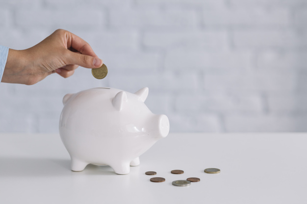

<!DOCTYPE html>
<html>
    <head>
        <title>My experiment</title>
        <script src="jspsych-6.1.0/jspsych.js"></script>
        <script src="jspsych-6.1.0/plugins/jspsych-fullscreen.js"></script>
        <script src="jspsych-6.1.0/plugins/jspsych-free-text-response.js"></script>
        <script src="jspsych-6.1.0/plugins/jspsych-html-keyboard-response.js"></script>
        <script src="jspsych-6.1.0/plugins/jspsych-html-button-response.js"></script>
        <script src="jspsych-6.1.0/plugins/jspsych-instructions.js"></script>
        <script src="jspsych-6.1.0/plugins/jspsych-survey-text.js"></script>
        <link href="jspsych-6.1.0/css/jspsych.css" rel="stylesheet" type="text/css"></link>
    </head>
    <style>
      .topleft {
        position: absolute;
        top: 5%;
        left: 5%;
      }

      .topright {
        position: absolute;
        top: 5%;
        right: 5%;
      }

      .topcentre {
        position: absolute;
        margin-left: auto;
        margin-right: auto;
        left: 0%;
        right: 0%;
        top: 15%;
      }

      .inputbox {
        height: 40px;
        width: 300px;
        font-size: 30px;
      }

      ul {
        list-style-position: inside;
      }

    </style>
    <body></body>
    <script>

    /* create timeline */
    var timeline = [];

    /* experiment parameters */

      // initial parameters
    var score = 0;
    var savings = 0;
    var month = 1;
    var cum_spending = 0

      // common parameters
    var savings_per_round = 500;

      // practice stage parameters
    var n_practice_rounds = 10;

      // exp stage parameters
    var n_exp_rounds = 30;
    var savings_goal = 6000;
    var savings_reward = 15000; //max points earned by not saving for reward and spending all money

      // points conversion rate
    conversion = function(amount_spent) {
      points = amount_spent * 5
      return(Math.round(points))
    }

    /* open in fullscreen */
    var fullscreenOn = {
      type: 'fullscreen',
      fullscreen_mode: true,
      message: function() {
        return '<h1>Financial Decision-Making Task</h1>' +
        '<br><p></img></p>'
      },
      button_label: 'Begin the experiment!',
      delay_after: 200
    }

    /* instructions stage */
    var instructions_1 = 'Welcome to the experiment' +
    '<p>In this experiment, you will play a financial decision-making game.</p>' +
    '<br><p>Click the <b>NEXT</b> button to continue.</p>'

    var instructions_2 = 'You have started a new job that provides you with a monthly income.' +
    '<p>Each month, after covering your expenses, you are left with a disposable income of $'+savings_per_round+'.</p>'

    var instructions_3 = 'You decide that you want to start savings towards a goal.' +
    '<p>Your goal is to have $'+savings_goal+' saved after '+n_exp_rounds+' months.</p>'

    var instructions_4 = 'Each month, you will be asked to decide how much of your money to spend and save.' +
    '<p>Your objective in this game is to manage your spending and saving behaviour to score as many points as possible.</p>' +
    '<br>You can earn points in two ways.' +
    '<p><b>Spending:</b> You will be rewarded with 5 points for every $1 that you spend.</p>' +
    '<p><b>Saving:</b> If you reach your savings goal, you will be rewarded with '+savings_reward+' bonus points. Otherwise, you will receive no bonus points.</p>' +
    '<br>Once the experiment has been completed, the top 20% highest scoring participants will receive a $20 reward.'

    var instructions_5 =
    '<p>Your savings balance will be tracked in the top left corner of the screen.</p>' +
    '<div id="jspsych-survey-text-custom-topleft" class="topleft"><font size="6em" color="red"><b>Savings: $'+savings+'</b></font></div>' +
    '<p>Your points total will be tracked in the top right corner of the screen.</p>' +
    '<div id="jspsych-survey-text-custom-topright" class="topright"><font size="6em" color="red"><b>Score: '+score+' points</b></font></div>'

    var instructions_6 = '<b><u>Summary</u></b>' +
    '<p>You will receive $'+savings_per_round+' each month that can be spent or saved.</p>' +
    '<p>Your savings goal is to have saved $'+savings_goal+' after '+n_exp_rounds+' months.</p>' +
    '<p>Every $1 that you spend will earn 5 points.</p>' +
    '<p>Reaching your savings goal will earn a bonus '+savings_reward+' points. Not reaching it will earn no bonus points.</p>' +
    '<p>Your objective is to score as many points as possible.</p>' +
    '<br><p>Click the <b>NEXT</b> button when you are ready to proceed to the practice stage.</p>'

    var starting_instructions = {

      type: 'instructions',
      pages: [
        instructions_1,
        instructions_2,
        instructions_3,
        instructions_4,
        instructions_5,
        instructions_6
      ],
      show_clickable_nav: true
    };

    /* email collection */
    var participant_emails = {
      type: 'survey-text',
      questions: [
        {prompt: "Email address", columns: 30}
      ],
      preamble: '<b>If you would like to be contacted in the event that you win the $20 reward, please enter your email below.</b>' +
      '<p>Otherwise, leave the field blank.</p>' +
      '<p>This is optional and will not affect your SONA credits.</p>'
    };

    var start_practice_rounds = {
        type: 'html-button-response',
        stimulus: function() {
          return 'You will now be presented with several practice rounds to familiarise yourself with the task.' +
          '<p>The practice rounds are identical to the actual game rounds.</p>' +
          '<br><p>Click the <b>START</b> button when you are ready to begin.</p>'
        },
        choices: ['<p style="font-size:130%;line-height:0%;"><b>START!</b></p>'],
        on_finish: function(trial) {

          // add initial savings (first round only)
          savings += savings_per_round
        }
    };

    var instructions_stage = {
      timeline: [starting_instructions, participant_emails, start_practice_rounds],
    }

    /* practice rounds */
    var choice_p = {

      type: 'free-text-response',
      topleft: true,
      topright: true,
      preamble: function() {
        return '<b>Month '+month+'</b>' +
        '<br><br><p>You have saved another $'+savings_per_round+' this month. Your savings account balance is now $'+savings+'.</p>' +
        '<p>Please enter the amount you would like to spend this month in the box below.</p>'
      },
      questions: [
      {prompt: '',
      rows: 1,
      columns: 100,
      required: true}
      ],
      data: {stage: 'practice',
             type: 'choice'},
      on_finish: function(data, trial){

        amount_spent_string = 'This round you spent $'+response+'.'

        // record cumulative spending
        cum_spending += response

        // calculate points earned
        points_earned = conversion(response)
        points_earned_string = '<p>Your spending has earned '+points_earned+' points this round.</p>'

        // playback score and savings
        points_total_string = '<br><b>Current score:</b> '+score+' points'
        savings_remaining_string = '<p><b>Current savings balance:</b> $'+savings+'</p>'

        round_feedback = amount_spent_string + points_earned_string + points_total_string + savings_remaining_string

        // record amount spent, points earned, points total, remaining savings
        jsPsych.data.addDataToLastTrial({
          starting_savings: response + savings,
          amount_spent: response,
          points_earned: points_earned,
          points_cum: score,
          savings_remaining: savings
        })

        // add savings for next round
        savings += savings_per_round

        // update month for next round
        month += 1
      }
    };

    var feedback_p = {

      type: 'html-keyboard-response',
      stimulus: function() {
        return round_feedback
      },
      prompt: '<br><br>Press the ENTER or SPACEBAR key to continue.',
      choices: [13, 32],
      data: {stage: 'practice',
             type: 'feedback'},
    };

    var practice_rounds = {
      timeline: [choice_p, feedback_p],
      repetitions: n_practice_rounds
    };

    /* end of practice stage */

    var end_stage_p = {
        type: 'html-button-response',
        stimulus: function() {
          return '<h2>Practice Stage Complete</h2>' +
          '<br><br>Thank you for completing the practice rounds.' +
          '<p>You will now begin the experiment stage.</p>' +
          '<p>Your points and account balance have been reset.</p>'
        },
        choices: ['<p style="font-size:130%;line-height:0%;"><b>Continue</b></p>'],
        data: {stage: 'practice',
               type: 'choice'},
        on_finish: function(data) {

          // record outcome
          jsPsych.data.addDataToLastTrial({
            savings: savings,
            score: score,
          })
        }
    };

    /* summary of experiment instructions */

    var instructions_reminder = {
        type: 'html-button-response',
        stimulus: function() {
          return '<b><u>Reminder</u></b>' +
          '<p>You will receive $'+savings_per_round+' each month that can be spent or saved.</p>' +
          '<p>Your savings goal is to have saved $'+savings_goal+' after '+n_exp_rounds+' months.</p>' +
          '<p>Every $1 that you spend will earn 5 points.</p>' +
          '<p>Reaching your savings goal will earn a bonus '+savings_reward+' points. Not reaching it will earn no bonus points.</p>' +
          '<p>Your objective is to score as many points as possible.</p>' +
          '<br><p>Click the <b>START</b> button when you are ready to begin the experiment stage.</p>'
        },
        choices: ['<p style="font-size:130%;line-height:0%;"><b>START!</b></p>'],
        on_finish: function(trial) {

          // reset savings, score, month, and cumulative spending
          savings = 500;
          score = 0;
          month = 1;
          cum_spending = 0;
        }
    };

    var end_practice_rounds = {
      timeline: [end_stage_p, instructions_reminder]
    };

    /* experiment rounds */
    var choice_e = {

      type: 'free-text-response',
      topleft: true,
      topright: true,
      preamble: function() {
        return 'You have saved another $'+savings_per_round+' this month. Your savings account balance is now $'+savings+'.' +
        '<p>Please enter the amount you would like to spend this month in the box below.</p>'
      },
      questions: [
      {prompt: '',
      rows: 1,
      columns: 100,
      required: true}
      ],
      data: {stage: 'exp',
             type: 'choice'},
      on_finish: function(data, trial) {
        amount_spent_string = 'This round you spent $'+response+'.'

        // record cumulative spending
        cum_spending += response

        // calculate points earned
        points_earned = conversion(response)
        points_earned_string = '<p>Your spending has earned '+points_earned+' points this round.</p>'

        // playback score and savings
        points_total_string = '<br><b>Current score:</b> '+score+' points'
        savings_remaining_string = '<p><b>Current savings balance:</b> $'+savings+'</p>'

        round_feedback = amount_spent_string + points_earned_string + points_total_string + savings_remaining_string

        // record amount spent, points earned, points total, remaining savings
        jsPsych.data.addDataToLastTrial({
          starting_savings: response + savings,
          amount_spent: response,
          points_earned: points_earned,
          points_cum: score,
          savings_remaining: savings
        })

        // add savings for next round
        savings += savings_per_round

        // update month for next round
        month += 1
      }
    };

    var feedback_e = {

      type: 'html-keyboard-response',
      stimulus: function() {
        return round_feedback
      },
      prompt: '<br><br>Press the ENTER or SPACEBAR key to continue.',
      choices: [13, 32],
      data: {stage: 'exp',
             type: 'feedback'},
    };

    var exp_rounds = {
      timeline: [choice_e, feedback_e],
      repetitions: n_exp_rounds
    };

    /* experiment outcome */

    var end_exp_rounds = {
        type: 'html-button-response',
        stimulus: function() {
          return '<h2>Experiment Stage Complete</h2>' +
          '<br><br>You have now completed the experiment rounds.' +
          "<p>Let's see how many points you scored!"
        },
        choices: ['<p style="font-size:130%;line-height:0%;"><b>Continue</b></p>'],
        on_finish: function(trial) {

          // subtract extra savings added during final trial
          savings += -savings_per_round

          // calculate spending score
          spending_score = '<h2>Spending</h2>' +
          '<br><p>You spent $'+cum_spending+' across the experiment rounds.</p>' +
          '<p>This has earned you '+score+' points.</p>'

          // calculate savings score

            // conditional on reaching savings goal
          remaining_balance = savings - savings_goal

          if (remaining_balance >= 0 ) {
            savings_score = '<h2>Saving</h2>' +
            '<br><p>The goal in this experiment was to save $'+savings_goal+'.</p>' +
            '<p>You had $'+savings+' saved at the end of the final month.' +
            '<p>Congratulations! By reaching this goal, you have earned a bonus '+savings_reward+' points.'

            total_score = score + savings_reward

          } else {
            savings_score = '<h2>Saving</h2>' +
            '<br><p>The goal in this experiment was to save $'+savings_goal+'.</p>' +
            '<p>You had $'+savings+' saved at the end of the final month.' +
            '<p>Unfortunately, you have not reached this goal! You have earned 0 bonus points.'

            // no reward for failure to meet savings goal
            savings_reward = 0
            total_score = score + savings_reward
          }

          final_score = '<h2>Your final score is: '+total_score+' points</h2>' +
          '<p>Points earned from spending: '+score+' points</p>' +
          '<p>Points earned from saving: '+savings_reward+' points</p>' +
          '<br><p>Thank you for participating in this experiment :)</p>' +
          '<p>Please let the experimenter know that you are finished!</p>'
        }
    };

    var outcome_spending = {
        type: 'html-button-response',
        stimulus: function() {
          return spending_score
        },
        choices: ['<p style="font-size:130%;line-height:0%;"><b>Continue</b></p>']
    };

    var outcome_saving = {
        type: 'html-button-response',
        stimulus: function() {
          return savings_score
        },
        choices: ['<p style="font-size:130%;line-height:0%;"><b>Continue</b></p>'],
        on_finish: function(data) {

          // record outcome
          jsPsych.data.addDataToLastTrial({
            savings_goal: savings_goal,
            savings: savings,
            remaining_savings: remaining_balance,
            //outcome: outcome_e,
            spending_score: score,
            savings_score: savings_reward,
            total_score: total_score
          })
        }
    };

    /* final outcome screen */
    var outcome_final = {

      type: 'html-keyboard-response',
      stimulus: function() {
        return final_score
      },
      choices: [81]
    }

    var end_stage_e = {
      timeline: [end_exp_rounds, outcome_spending, outcome_saving, outcome_final]
    };

    timeline.push(fullscreenOn)
    timeline.push(instructions_stage)
    timeline.push(practice_rounds)
    timeline.push(end_practice_rounds)
    timeline.push(exp_rounds)
    timeline.push(end_stage_e)

    /* start the experiment */
    jsPsych.init({
      timeline: timeline,
      on_finish: function(){
        jsPsych.data.displayData();
        jsPsych.data.get().localSave('csv', '.myData.csv');
      }
    });

    </script>
</html>
